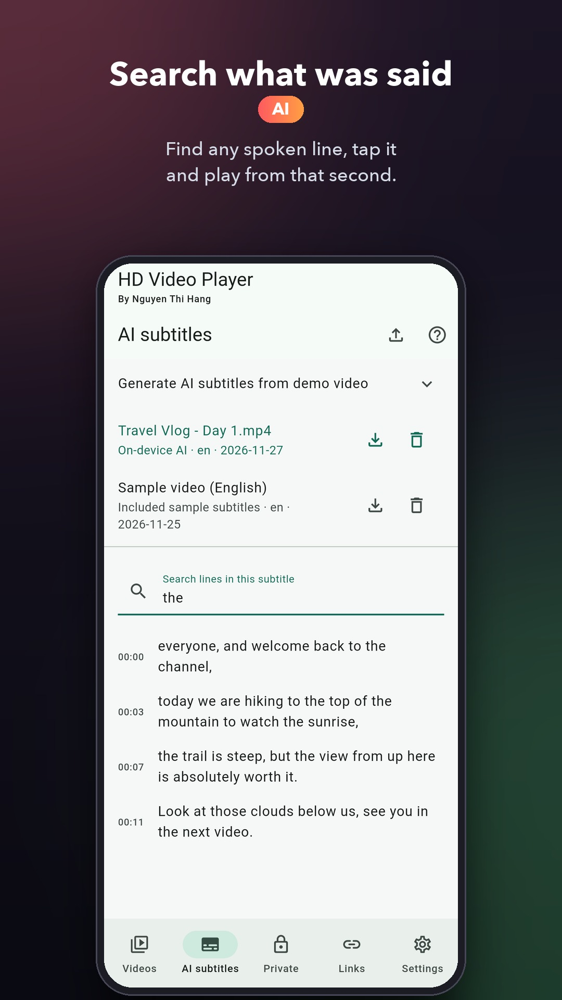
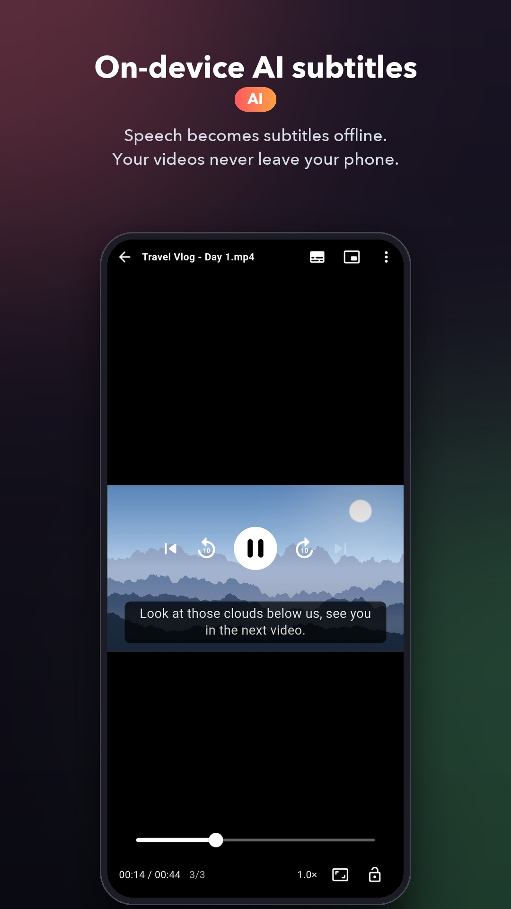
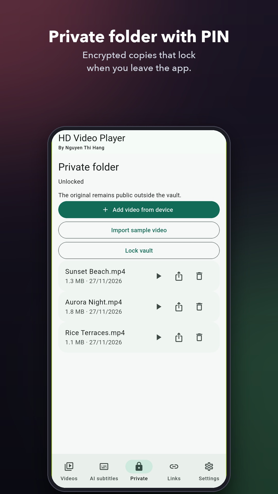
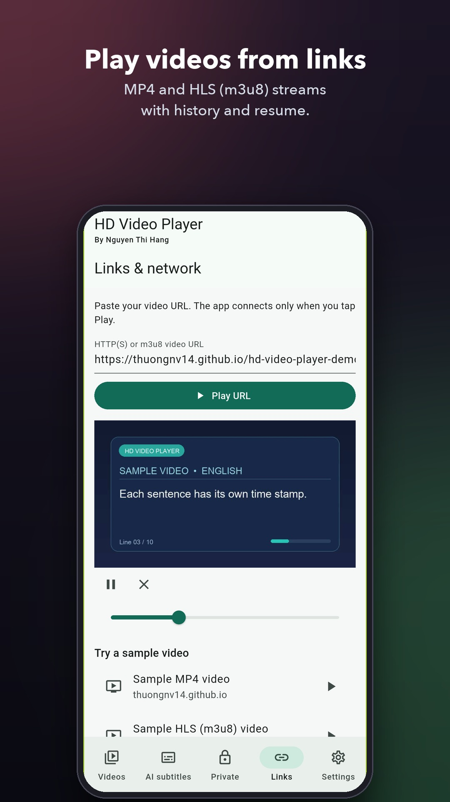
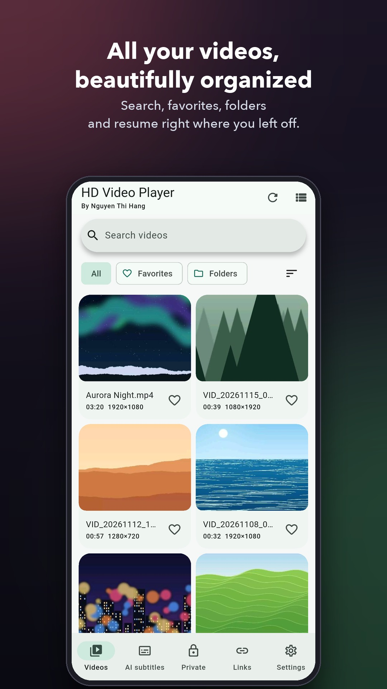

HD Video Player 2.1 — Review guide
Package tool.video.hdmaxvideoplayer · version 2.1.0 (16) · developer Nguyen Thi Hang ·
thuong.tin.3a@gmail.com
- AI subtitles — speech to subtitles on the device, search what was said, jump to that second, export SRT.
- Private — a folder locked with a 6-digit PIN that keeps encrypted copies of videos.
- Links — play MP4 and HLS (m3u8) links with history and resume.
Before you start
- No account, no sign-in, no purchase. Everything can be tested on a clean device.
- On first launch the app shows a privacy notice and asks whether to send optional crash reports. Either answer is fine. A short guide follows; tap Skip or open any tool from it.
- Access to videos on the device is optional. If you deny it, the three new tabs still work with the sample content.
- A network connection is needed only for two things: the one-time download of the speech model (step 1b) and the Links tab (step 3). Everything else works offline.
1. AI subtitles
1a. Search what was said (works offline, no download)
- Tap the AI subtitles tab.
- Tap Sample video (English). Its subtitles are included with the app so this step works before any download.
- Type subtitles in Search lines in this subtitle.
- Tap any result.
Expected: three matching lines with their times; tapping a line opens the player at that second.
Also available here: Export SRT (saves a standard subtitle file where you choose), Import SRT and Delete subtitle (never deletes the video).

1b. Create subtitles with on-device AI
- In the AI subtitles tab, expand Generate AI subtitles from demo video.
- Tap Download model. The speech model (about 99 MB) is downloaded once from huggingface.co and kept on the device. Depending on the network this takes 10 seconds to a few minutes; the line above the buttons shows “installed: 99 MB” when it is ready.
- Tap Generate from demo. Recognition runs on the device for about 10–40 seconds.
Expected: a new entry “Sample video (English) · On-device AI” with the recognised lines and their times.
With your own video: tab Videos → open a video with speech → subtitles icon (top right) → AI subtitles → choose the spoken language → Create subtitles. The subtitles appear on the video and are saved in the AI subtitles tab. Videos and audio are never uploaded. Three AI uses are free each day; an optional rewarded ad gives one more.

2. Private folder
- Tap the Private tab.
- Enter any 6-digit PIN twice and tap Create and unlock.
- Tap Import sample video and Confirm (or Add video from device to pick one of your videos).
- Tap Play on the item, then go back.
- Leave the app (Home) and return.
Expected: the item is listed with its size and date; after leaving the app the folder is locked and asks for the PIN again.

3. Links (network playback)
- Tap the Links tab.
- Under Try a sample video, tap Sample MP4 video or Sample HLS (m3u8) video.
- Close the video with ✕.
- Tap the entry under History.
Expected: the sample plays and can be seeked; after closing, it is listed in History and resumes from the saved position.
You can also paste any MP4 or m3u8 address and tap Play URL. Unencrypted HTTP links ask for confirmation first. History can be turned off or cleared. The samples are hosted at thuongnv14.github.io/hd-video-player-demo.

4. Videos (player and library)
With access to videos allowed: browse all videos or by folder, search, sort, favourites, resume where you stopped, auto-play next, background audio, sleep timer, picture-in-picture, speed 0.25×–4×, gestures for brightness, volume and seeking, audio track choice, built-in MKV/MP4 subtitle tracks and frame capture.

Ads and privacy
| Ads | Non-personalised Huawei Petal Ads: a banner on the main tabs (not on Private), a full-screen ad at most once every 2 minutes and only after a video is closed, and an optional rewarded ad for an extra AI use. No ad is shown during playback, picture-in-picture or PIN entry. Ads may not appear before the app is published. |
|---|---|
| Data | Videos, subtitles, the private folder and link history stay on the device. Optional crash reports (Sentry) are sent only after consent and never include content, file names, links or the PIN. |
| Privacy policy | nguyenthihang68.blogspot.com/…/hd-video-player-privacy-policy.html |
| Permissions | Videos/storage (library), notifications and media playback service (background audio), internet (ads, model download, links). No location, contacts, camera, microphone or phone access. |
Questions during review: thuong.tin.3a@gmail.com. Thank you for reviewing HD Video Player.